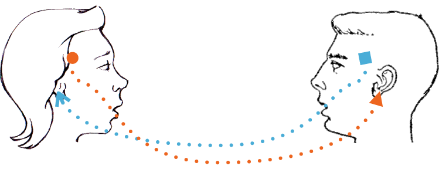
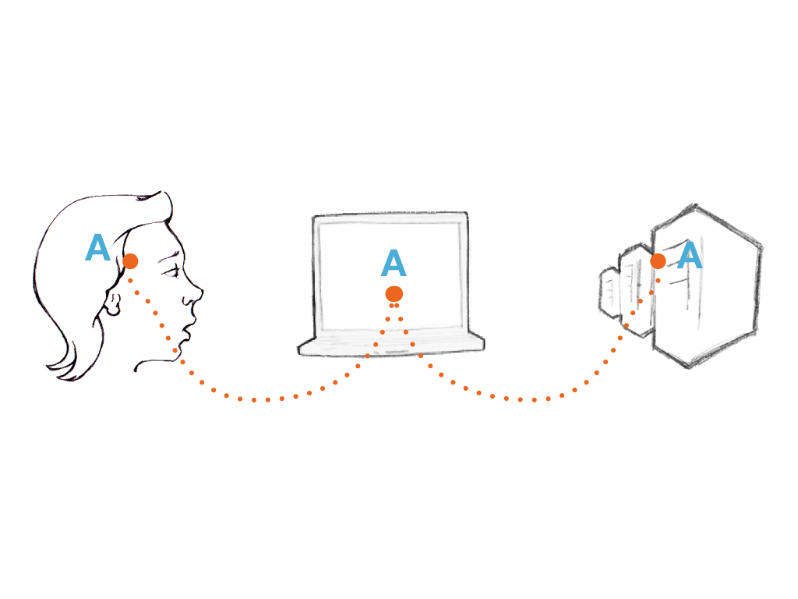
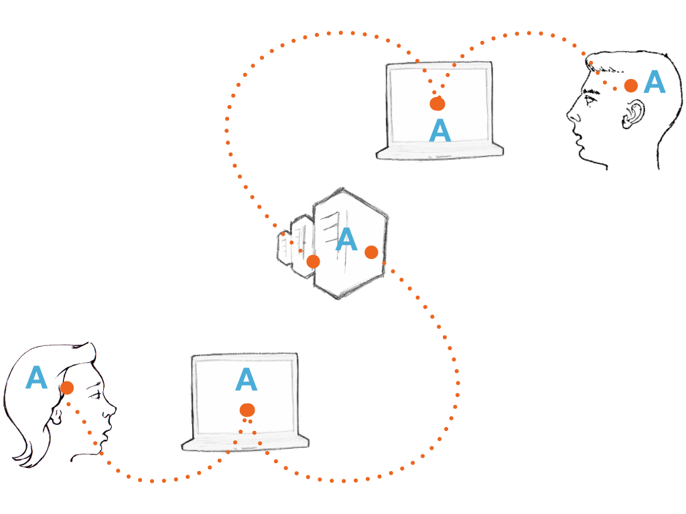

Beyond Sharing:
Open Source Design
Future Everything, May 2010
Open source is great!
But does it really exist beyond code?
Diagram

1. Scratching an Itch
- OS motivation - personal interest in (and low costs for) collaboration
- OSD motivation - not so straight-forward
- Chicken & Egg - Designers don’t use OSS
2. Granularity
- In coding (software) and writing (wikis) the building block is granular - a character
- Allows for varied contribution:
- Accessible ladder of contribution
- History
- Moderation
- Transparency
3. Language

Encodeing / Decoding
Stuart Hall 1980


Encoding
- Defining a language (code) is key in design (graphic, color, layout, animation, interaction...)
- Coding without a shared language (code) is impossible
- Setting collaboration standards is essential
- Standardization VS. Innovation
Decoding
- Code either executes or it doesn’t, but a message interpretation isn’t binary
- Inconsistent design fragments the message (our brains can’t really multitask)
- Wikipedia’s has largely rational guidelines for decision making, design’s doesn’t
So is it simply undoable?
(would I be wasting your time if I thought so?)
User Generated Content
User Generated Interfaces

Fixing it:
1. Scratching an Itch
- Price is always itching, but it's not enough
- We can't expect/force the use of bad tools as an ideological statement
- Some success with webdesign
*Still very code-based
Fixing it:
2. Granularity
- When possible, use granular building blocks - namely: use code
Get designers on version control systems
- Put all master files online
Explore file non-code versioning (Dropbox?)
Fixing it:
3. Language
Collaborative Encoding:
- 1st step:
Conduct a networked research
(we already have collaborative tools for that)
- 2nd step:
Define a modular and extensible language
* Support simple inheritance (like in CSS)
- 3rd step:
Document the language (style guides)
Fixing it:
3. Language
Collaborative Decoding:
- Some design decisions are rational, and can achieve consensus, like:
- UX research
- Technical aspects of design
- Design best practices (in typography, use of icons, interaction paradigms...)
- Blogs share resources and documentation
A nuanced analysis of OS:
Openness + Leadership

We can’t just sprinkle design with the magic pixie dust of “Open Source”
Collaboration is hard!
Let’s make it easier
Thanks!
Future Everything, May 2010